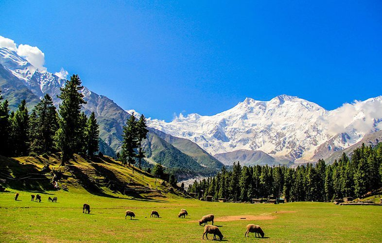
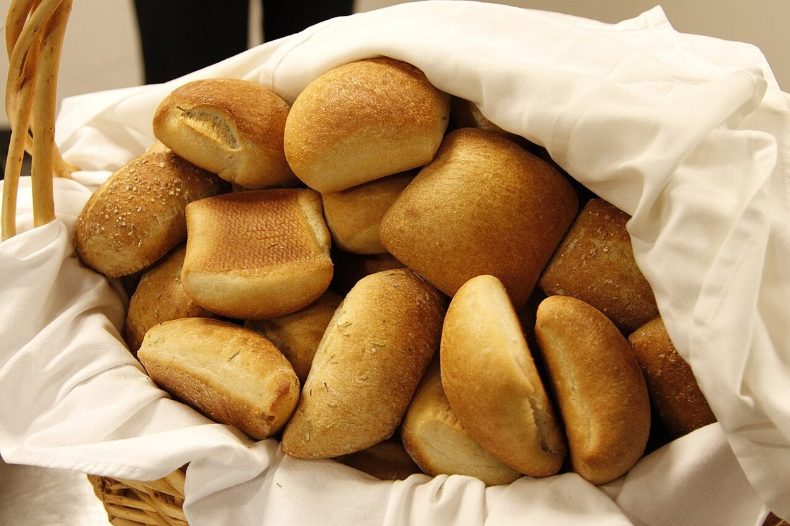
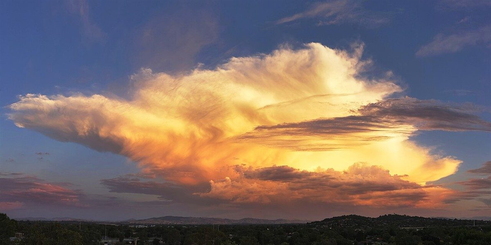

ベーカリー / 愛知県小牧市
パン
愛知県小牧市のベーカリー「WAKUWAKUパン」のご案内ページです。営業時間やメニューなど、詳しいことは準備中。まずはInstagramをのぞいてみてください。

制作側の連想
「ワクワク」から、遠足のしおりを。
店名は「わくわく」という言葉を思わせます。制作側は、そこから遠足の前の日の気分を連想し、このサイトを「遠足のしおり」の形にしました。お店の理念や店名の由来とは無関係で、制作側の連想です。しおりに出てくる道や空の写真は、お店や小牧市の風景ではなく、国外または撮影地不明のフリー素材のイメージです。
きょうのコース(イメージ)
集合、小道、お昼、夕空。
- 1あさ、しゅうごう日の出のころを思い浮かべて

国外のイメージ(スウェーデン) - 2こみちをあるく木立の道を思い浮かべて

国外のイメージ(ドイツ) - 3おひるのじかんかごを開ける時間を思い浮かべて

撮影地不明のイメージ - 4ゆうぞら、かいさん帰り道の空を思い浮かべて

国外のイメージ(オーストラリア)
このコースは制作側の創作です。お店が行事や催しを行うという意味ではありません。パンの写真はお店の商品ではなく、提供内容を示すものでもありません。
しおりの裏表紙
お店のこと(確認できたものだけ)
| 所在地 | 〒485-0069 愛知県小牧市藤島町梵天40 |
|---|---|
| 電話 | なし |
| 営業時間 | 準備中 |
| 定休日 | 準備中 |
| ご予約 | 準備中 |
| 駐車場 | 準備中 |
| SNS | Instagram @pan_oj126 |